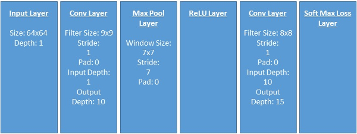
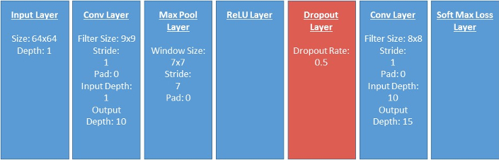
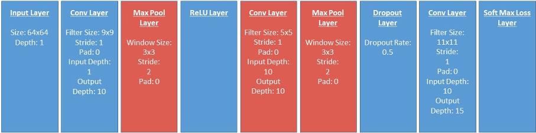

Project 6 / Deep Learning
First layer filters after fine-tuning VGG-F Network. Resemble edges and blobs.
Introduction
The goal of this assignment was to gain some experience using deep convolutional networks. In particular, this assignment asked us to explore the use of these networks in the context of scene recognition. Similar to a previous project, 'Scene Recognition' for this assignment corresponds to being able to classify a given image as being from one of 15 possible scene categories.
There were two strategies that were pursued to complete this scene recognition task. The first was to train a deep convolutional network from scratch using the training data that we had on hand. The second was to take a pre-trained deep network, and fine tune it for our recognition task.
This report will proceed as follows: First, I will walk through the methodology and results of the first strategy. Then I will describe and show the methodology and results of the second strategy.
Strategy 1 - Train Network From Scratch
Methodology
1. Out of the box, I am given a 4 layer network that is composed of a convolutional layer, a max pool layer, a ReLU layer, and finally another convolutional layer. Thus, the first step is simply to see the results of training/testing the network as is. Here is a diagram of our starting network layers:
2. After running training/testing process once, I then start to make slight additions/changes to get better performance. The first adjustment I make is to try to get more data by "jittering". "Jittering" simply refers to slightly changing the appearance of training images to synthetically increase the amount of training data. In this case, I tried one form of jittering which was to simply mirror images (i.e. flip them left to right).
3. The second adjustment I made was to zero center the images I was using. This pre-processing makes sense to do given that we use the pixel values to get later activations. Thus we'd like pixel values across images to have a similar range to ensure good numerical stability.
4. The third adjustment I made was to regularize my network with a dropout layer. Dropout regularization can intuitively be thought of as simultaneously training multiple "thinned" versions of the network. By turning off connections randomly, this step considerably helps fight overfitting. Note that there is a degree of freedom here in terms of what "dropout rate" (i.e. the percentage of connections that are randomly deleted) to use. I used the default 0.5. Here is an updated diagram of my current network layers (new layer colored as red):
5. The final adjustment I made was to try to make my network deeper. Up to this point, my network has been relatively shallow. As a result, there are parts of the network that are overly 'lossy'. For example, my Max Pool layer covered a 7x7 window and had a stride of 7. A lot of information is lost through this layer. To help combat this lossy-ness, I decided to reduce the size and stride of my existing Max Pool Layer, and add in a few other layers. In particular, I changed my existing Max pool layer to have a window size of 3x3 and a stride of 2. I then added another convolutional layer between my existing ReLU and dropout layers. Finally, I added in another Max Pool layer between my new convolutional layer and my dropout layer. Here's a diagram of my network at this point (This is my final implementation for Part 1 of this assignment - new/adjusted layers colored as red):
Results
Below, I show the results that I garnered after running my network at each of the methodology steps above. The index in the table corresponds to the methodology step. Note each plot shows 2 charts - The left chart shows the training error and validation error across epochs. The right chart shows the training and testing accuracy (it shows error - accuracy is 1-error) across the same epochs. Specifically, it shows top 1 error (accuracy), and top 5 error (accuracy). Our focus in the below analysis is on the top 1 error of the validation set (right plot yellow dashed line) Also, note that the learning rate I use to get these results is 0.0001.
| Methodology Index | Result Plot | Comments |
|---|---|---|
| 1 (Baseline) |  |
Accuracy - 26%. Admittedly, the results aren't great out of the box. |
| 2 (Baseline+Jitter) |  |
Accuracy - 34%. Adding more synthetic training data by "jittering" helped by ~10%. Also note that the rate at which the top 1 training error (blue line) is decreasing is lower than the rate from the step 1 plot. |
| 3 (Baseline+Jitter+ZeroMean) |  |
Accuracy - 52.9%. Zero mean-ing our images helped by quite a bit (~18%). Having said that, the training error still monotonically is decreasing while the validation error seems to get stuck around 50%. |
| 4 (Baseline+Jitter+ZeroMean+Dropout) |  |
Accuracy - 58.13%. The dropout layer helps our accuracy by ~6%. More noteably, however, is its effect on overfitting. Whereas the step 4 plot had the blue line continually decreasing while the validation yellow line remained constant, this plot has both the blue and yellow lines remaining steady at 58%. |
| 5 (Baseline+Jitter+ZeroMean+Dropout+DeeperNetwork) |  |
Accuracy - 55.4%. Regrettably, my deeper network did not result in higher accuracy. Having said that, the accuracy I have here is not much worse than what I got with a shallower network. |
Strategy 2 - Leverage Pre-trained Deep Network
Methodology
At a high level, this strategy amounts to taking a pre-trained network, replacing the final layer(s) to match your needs, and re-training. Effectively, this implies that the pre-trained model is a better initialization of weights than random values from a gaussian distribution.
1. Get an existing, pre-trained network. In this case, I used the VGG-F network
2. Remove the existing last 2 layers of the VGG-F network, and replace them with my own convolutional fully-connected and soft-max layers. This replacement is to ensure that the dimensionality of the net's output matches my needs (we have 15 scene categories). This replacement convolutional layer will have a window size of 1x1, will span a depth of 4096 (the input depth the existing network gives us at this stage), and will have an output depth of 15 (for the 15 categories).
3. I then add dropout layers between FC6/FC7 and and FC7/FC8. Again, the benefit here is to fight off overfitting as we are going to train this model.
4. Separate from model adjustments, I also adjust the input images to be of size 224x224. This is just to match the input dimensionality expected by the existing network.
5. The model additionally expects that input images will have a depth of 3 ( i.e. that they will be color images). Since I mostly have grayscale images, I meet this expectation by concatenating each grayscale image with itself 2 times so that every input image has a depth of 3.
6. Lastly, similar to our 'from scratch' network, the existing VGG-F expects images to be zero-centered. Thus, I zero-center my input images using the average image provided by VGG.
Results
Since most of the changes described in the methodology section were simply to meet the dimensionality/normalization expectations of the existing network to even get it to run for our task, I only show the final result (after following all of the steps described in the above section - Note learning rate used here is still 0.0001):

Accuracy - 88.9%. Clearly, the idea that the pre-trained network weights seem to be a better initialization than random gaussian weights holds true. Fine tuning the existing VGG-F network gives me a much higher accuracy than I was getting when I was using the same training data to try to train a network from scratch (actually, potentially even 'less' training data since I don't jitter here).